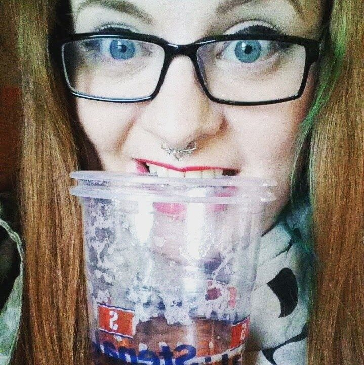
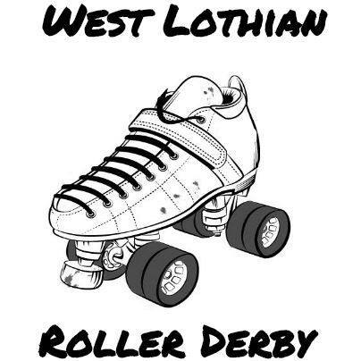

By their powers combined, they are... Leeds Roller Derby
So, it perhaps says something about Roller Derby as a culture that growth happens most publicly as a result of new leagues forming, rather than people banding together...
...but in Leeds, that trend is being bucked, as Leeds Roller Dolls [#65 WFTDA, #11 UKRDA, #150 SRD ] and Hot Wheel Roller Derby [#9 UKRDA, #179 SRD], Leed's two long-standing leagues, have announced today their merger into one single Leeds Roller Derby.

The rebrand and image of the resulting league is still in development, so the travel team will compete in black and white at British Champs Tier 1 this year, before unveiling new colours later in the year.
Head coach and Men’s Team England skater Jerry Attric’, who founded LRD in 2007, and HWRD in 2010 – said: “There has been some pretty fierce rivalry between us over the years but, as time has gone on, it has become obvious that we both want the same things – most importantly to be the best - and our members agreed that we could do this better together than apart.
“We all want to create a team that will be a real challenge to the top teams going forwards, and will have room for the development of newer skaters too.”
Speaking about how the negotiation process worked, Livid Doll, long term LRD coach and skater said: “There aren’t many people with us who were here back then, but of course we had to be sure that the two teams’ histories weren’t going to get in the way. We had a meeting. We put the past behind us and we started afresh.
“A lot of work has been going on behind the scenes and we trained together for a couple of weeks before the vote opened to give us all a sense of how we’d mesh.
“We’re extremely excited about what lies ahead for us as a united force.”
One element which may have crystallised the need to cooperate for a greater result is the loss of Leeds Roller Doll's venue, the Leeds Futsal Area, earlier in 2016. Leeds Roller Derby will be using Hot Wheels' venue of Leed's University's The Edge sports centre.
Whilst the focus currently is on Leeds Roller Derby's A team, as they need to be ready for British Champs 2017, the league also plans a B team, recreational team and a juniors team!
TDTM Awards: The NSOs
As you're probably aware, the second ever Talk Derby To Me Listener Awards are currently up for votes, with an extended set of categories since last time. Several of those categories were added to allow nominations for roles which are frequently under-represented, and less visible, than those of Skaters - Referees, NSOs, Announcers and so on.
However, it became somewhat clear that one of the issues with NSO awards is that... well, NSOs are less visible (some of them would argue that if they're visible, they're doing it wrong), and less public than Skaters, and people don't really know what the nominees were have been doing. And many of them have been doing a huge amount, and some very big things - as well as being necessary for the running of every game (and even more important for tournaments, where there's geometrically increasing amounts of organisation needed), they're also in the background keeping stats and data safe and up to date, both locally and in shared community resources like Flat Track Stats.
So, in the spirit of the Award itself, we've given each Nominee for the NSO Award a small (too small!) amount of space to say something about what they did this year... which we've topped with a brief description of their association and history. NSOs were also given the opportunity to provide a photo - if they didn't, we've applied the universal NSO placeholder!
NSOs are covered in the order they appear in the TDTM Awards Voting form, here. We've added their "actual" NSO name after their name on the form, if it differs.
Blind Io
 Photo: John Hesse Photo: John Hesse |
Blind Io is an independent NSO in the Edinburgh area. He's been NSOing for 3 years. His favourite event to NSO this year was The European Smackdown. "I became an Independent NSO at the start of this year, helped manage 2 WFTDA Recognised Tournaments as a GTO, visited 5 countries and NSOed my first ever WFTDA D1 & Top-10 games!" |
Bomb Weasley
|  - | Bomb Weasley is an independent NSO based in Wales. She's been an NSO for 2 years now, and her favourite event to NSO was the Louisey Rider Cup, as "I was the PBM and had two unicorn PBTs. AND GLITTER. " "This year I have been DHNSO for BCW-T4W, HNSO for Wales Men and have transferred to a new league. I have also been to Mons for my first tournament abroad, attended a WFTDA clinic and co-THNOsed for the first time. I have officiated across the UK and Ireland, making new friends, catching up with old ones and sampling many many many gins on the way." |
Pettichoke
 Petti is in the left hand side here...click here for closeup Photo: Ken LeBleu ("JammerTime") Petti is in the left hand side here...click here for closeup Photo: Ken LeBleu ("JammerTime") |
Petti is affiliated with Eastbourne Roller Derby, and has been NSOing for 5 and a half years. Her favourite event to NSO this year was the Japan Open, in Okinawa, as "sorry to break loyalty to Eastbourne Extreme, but crew heading the first ever tournament in Asia was pretty frickin special!" "I became the first level 3 WFTDA certified NSO in Europe from a non-WFTDA league. NSOd to Japan and back, as well as being mentor to many. If you haven’t seen the work that I do…then I’m doing it right. NSOs are the glue that make things awesome :-)" |
Sara Tonin
 Photo: Shirlaine Forrest Photo: Shirlaine Forrest |
Sara Tonin is an independent NSO based in the Manchester area. She's been an NSO for 2 years, and her favourite event to NSO this year was the Men's Roller Derby World Cup in Calgary. "I was HNSO with Manchester Roller Derby until recently, I've been THNSO of the men's side of British Championships, and I was lucky enough to LT at MRDWC in Calgary, as well as travel to Rollercon. I've had a busy year, nearly hitting the 200 game mark!" |
Dr Stevel
 Photo : John Hesse Photo : John Hesse |
Dr Stëvël is NSO for Southern Discomfort Roller Derby, and has been NSOing for 5 years. His favourite event to NSO this year was The European Smackdown. "Being heckled by close to a thousand people has to be the highlight... It was great to see the crowds having so much fun. I have been mainly Jam Timing or hiding from Team Heckle" |
Disorder Lee
 - - |
DisorderLee is affiliated with London Rockin' Rollers, where she also skates. She's been NSOing for almost 5 years now. Her favourite event to NSO this year was the Men's Roller Derby World Cup in Calgary. "I've NSO'ed a lot of close door/challenge team games, NSO'ed some games in Tier 2 South British Champs, as many of the Tier 1 Men's British Champs as I could go to (dates sometimes overlap as I also skate), including my first open door game as HNSO, most of our B teams home games and the Men's World Cup in Calgary, CA." |
Iain Wilson [Dor-Iain Grey]
 Photo: Graeme Willetts Photo: Graeme Willetts |
Dor-Iain NSOs for Bath Roller Derby Girls, where he has been for 2 years. His favourite event to NSO this year was The Louisey Rider Cup. "This year I was a Divisional HNSO for British Championships, and a Crew Head for the promotion playoffs. I officiated at The European Smackdown in Sweden, the first WFTDA recognised tournament outside of America, as well as Eastbourne Extreme, Men's European Cup, Road to TBC and many more, covering 70+ games in total." |
Bath Vader
|
- |
Bath Vader also NSOs with Bath Roller Derby Girls, where they've been for 14 months. Their favourite event to NSO was the Suomi Cup Final. "NSOd Champs Tier 3 South, SWUK, BRDG closed door games, playoffs, hyper unicorn tourney, Road to TBC, Soumi Cup final, Oslo, London Brawling, Tattoo Freeze. Lots still to learn which is why it's great when I get to work with really seasoned NSOs." |
V-ictoria Tickle [Miss Tickle]
 - - |
Miss Tickle NSOs for Glasgow Men's Roller Derby, as of only a month ago - she was previously independent. She's been NSOing for 1 year, after stepping down from skating. Her favourite event to NSO this year was 5th Blocker's 5th Birthday Party, as "it was my first time NSOing a Junior game!". "I've travelled the length and breadth of the UK for scrims, bouts & tournaments. I’ve learnt to be Jam Timer as well as a penalty box official and can now confidently be PBM! When all NSO roles were filled, I’ve been LUM, Bench as well as photographed many a game!" |
Krystal Vice
 - - |
Krystal Vice Head NSOs for Seaside Sirens Roller Girls and Southern Discomfort, as well as both Team Englands. She's been an NSO for 5 years. Her favourite event to NSO this year was The European Smackdown, as "Crew Head - terrifying but awesome (got to CH with Acid!)" "HNSO for two leagues and two national teams, THed Sevens x 2, MEC and Suomi Cup. Went to RollerCon and MRDWC, West Track Story, Mayday, Sci Fight, London/Gotham, ERDT, HUUEB, DDT, Road to TBC, among other things! :)" |
Peggy Kreuger
 - - |
Peggy Kreuger is Head NSO for Auld Reekie Roller Girls, and has been NSOing for about 3 and a half years (in Edinburgh and Aberdeen). Her favourite event to NSO was the WFTDA Clinic, although she also includes "reaching 100 games and the charity games where everyone dressed to a theme". "Increasing my knowledge as a NSO through Head NSOing and helping the training of others. I've head NSO'd single games, double headers, a Sur5al and even a small tournament [ARRGmageddon]! This year has taught me a lot and NSOing will only teach me more in time. " |
Resting Bexface
 - - |
Resting Bexface NSOs for Newcastle Roller Girls and Tyne & Fear Roller Derby, where she's been for 18 months. Her favourite event to NSO was Newcastle's first C Team game. "Mostly developing my skills and learning lots. Started the year with 6 months experience, half way through the year was HNSO for two big leagues. Lots of learning. Lucky to have worked with some amazing people who have helped me so much." |
Emily of the State
 - - |
Emily of the State NSOs for Rainy City Roller Derby, where she's been for 3.5 years. Her favourite event to NSO this year was SKOD: A Skate Odyssey, for the "great officials, great derby, great graphics!" "I have done loads of travelling to various tournaments including The European Smackdown, The Big O, A Skate Odyssey, Skates of Glory, MEC and The Suomi Cup. As well NSOing many other games in and around the UK for British Champs. (As well as dipping my toe in the ref lane back at the Thunderdome!)" |
Linz & Needles
 - - |
Linz & Needles is affiliated with Oxford Roller Derby and Southern Discomfort Roller Derby, and has been NSOing for 3 and a half years. Her favourite event to NSO this year was the Men's European Cup. "I officiated at 7 tournaments (including my first NSOing trips outside the UK, to Canada for MRDWC and Belgium for ERDT). I worked games from multiple tiers of British Champs, and was a divisional Head NSO. I became MRDA Recognised! I spent about 36 hours in the penalty box…" |
Yoshi [DominAsian]
 Photo: John Hesse Photo: John Hesse |
Yoshi NSOs for Suffolk Roller Derby, and is one of the longest serving NSOs up for an award, having been NSOing for 7 years! His favourite event to NSO this year was Eastbourne Extreme. "Stepped in as a Divisional Head NSO for Brit Champs in Tier 3 Mens. Jam timed everywhere. Popped my Mainland Europe officiating cherry at ERDT 2016. Teamed with Funk as Puck to run a couple officiating boot camps. NSO’d Road to TBC. WON SO MANY AFTERPARTIES!" |
Halo Jones
 Photo: Eloise Rees Photo: Eloise Rees |
Halo Jones is affiliated with Oxford Wheels of Gory, and has been NSOing for more than 3 years. Her favourite event to NSO was Essex Sevens, as "every year it gets better!". "All the Sevens format games it feels! Handling the Men’s Southern Sevens Cup was amazing-I got to work with great officials. That experience was reflected throughout my year, working with shiny new officials and brilliant veterans. 2016 was a lot of teaching others, watching others and importantly, learning from others!" |
Flamingo image licenced CC:BY by Creative Tail
Thanks to Blind Io for making contact with the other NSOs and generally supporting this project.
Tenerife Roller Derby bringing the heat to Winter tournaments...
This weekend, Tenerife Roller Derby are hosting one of the last tournaments of the year, as they host Dundee Roller Girls and Malmö's Crime City for a sunny Winter's triple header.
We've already talked to Dundee (here) and Crime City (here), so it's time to catch up with the hosts to talk about their year, and their preparations. Speaking to us was Mercromina Tenerife's Co-Captain and also Co-Captain of the current Team Spain (as Mercedes)!
 Mercromina, centre, blocking against Las Palmas earlier this year (Photo: Javier Velasco)
Mercromina, centre, blocking against Las Palmas earlier this year (Photo: Javier Velasco)
Tenerife have had a good year this year, with a good performance in the first Spanish National Tournament (second place to Madrid!), and only one loss outside that (to the very strong Paris B). Are you pleased with your team's performance, and what have you been taking from it?
This past year has been a very important year for us. It might sound strange, but we've lost some games and that has made us get out of our comfort zone and realize how hard one has to work to stay on top. We had never lost against a Spanish team before the final against Madrid this year (in which they played an amazing game and totally deserved the win), so we are convinced that a team needs to lose games sometimes to grow stronger. Of course, that kind of thought comes a bit later, in that moment you just want to win everything. So, in general, I am very pleased with our performance last year at the National Championship, especially if you take into account that we hadn't played any game for a complete year.
Tenerife Roller Derby is also a big part of Team Spain 2018, just as it was a big part of the 2014 team. (And you're co-Captain of Team Spain at the moment!) In 2014, that causes a lot of flights to be needed for practice! How does it feel to be back on Team Spain, and how are the team balancing membership of the National Team with Tenerife's own ambitions?
I am honoured to have been co-captaining both teams, Tenerife Roller Derby and Team Spain, this year. It is a big responsibility but also a very challenging and exciting work to do, very rewarding.
They're both two teams that I love and in which I have enjoyed a great number of games. Living so far away makes it always difficult to attend all practices and participate in the tournaments so not everyone is able to do it and some of us have to do a big economic effort, but, at least in my case, I can say that it's worth it.
This year the World Cup will take place in Manchester, so it will be much cheaper than last time, that's great news.
Nevertheless, this tournament will be my last one, since I'm retiring from derby after 6 very intense and engaged years, so I'll follow the adventures of my beloved Team Spain mates from a bit further away and the ones from my home team a bit closer.
Recently, it seems that Tenerife have really been excited by international roller derby, inviting a lot of teams from outside Spain for mini-tournaments. What lead to this decision to have these mini-tournaments, and does it help to be a nice warm sunny country when Europe is in Winter when inviting teams?
We have always been very interested in playing international games. In fact, we've done at home more international than national games (Finland, Scotland, Portugal, Germany, England, France, Sweden are some of the countries that have visited us). This season we are organizing the games in this mini-tournament form so we can offer the teams two games in a row. That's always a good point for visiting teams, having the chance to play two games in one trip.
It's not easy to bring teams to the island, because of the long distances and the cost of the trip, but, of course, being an incredibly beautiful and sunny island is always something that encourages them to come. Lots of teams use the chance to stay a few more days here and have some holidays together. I can't imagine a better team bonding acitivity.
Your next tournament features two teams from much further North in Europe (everyone is further north than Tenerife, but …!) - Dundee and Malmö - but this isn't the first time you've played Scottish, or Swedish, teams. How are you preparing for the tournament - and do you have any advice for the visiting teams?
We are training really hard for this and the other tournaments to come. We've had a lot of important members of the team leaving us recently but we are also lucky enough to always have new talented and motivated skaters with us, so we are currently focusing on maintaining the level that we've achieved in the last years and doing a good transition to our new skaters squad.
With both National Championships, and these tournaments, Tenerife Roller Derby must have even more exciting things lined up for next year? What can you tell us of the future plans?
Our future plans for this season include some more tournaments at home, but also travelling to play tournaments abroad. That is a really exciting thing for us, since we haven't been able to travel to play a tournament yet, except for the National Championships last summer. So we're really looking forward to it. Our plan is to keep growing and try to be the best team in Spain, although we're very pleased that derby is growing in our country and more and more teams are raising their level, we've always supported our other national teams.
Tenerife's Torneo Triangular Roller Derby is on this 17th December, starting at 2pm , at the Pabellón de deportes Pancho Camurria. Event page is here: https://www.facebook.com/events/1790180551249253/
West Lothian's newest League.... West Lothian Roller Derby
We've covered quite a few new leagues in Scotland recently, and to our knowledge, West Lothian Roller Derby are the last of the list (although they were one of the first to appear this year).
Based in, well, West Lothian, the league is really just getting off the ground - and has a call out for support from anyone who can help them with costs and equipment.
We caught up with founder, Samantha "Queen C" Carruthers, to ask her where the idea came from for the league, and where they were on the journey at present:

So, where did the idea come from for the league?
"Well that's easy! My idea came from my passion for derby and the fact I'm studying business management. I can see the potential for an amazing team, who will be a charity/not-for-profit organisation. I want to bring communities together through roller derby and have had a really good response from communities who I have spoke to about this.
The obvious issues have been getting funds for kit together, we are still struggling but I have no doubt this will come together. At the moment, we are still getting our name out there and trying to get people interested! We have had a lot of interest in a junior team, so we will have a junior and senior league! We aim to be training for the end of January
We've had loads of interest, more than 30 people wanting to start. So kit is a very very big issue."
West Lothian Roller Derby have a JustGiving donations page here: https://www.justgiving.com/crowdfunding/westlothianrd
Power of Scotland, under new Management
The Power of Scotland (Scotland's National Men's Roller Derby Team) Management and Coaching Team elections are complete, and there's some new faces, and some returning ones, in the mix; as well as a few new positions. The new team will be managing Power of Scotland as they prepare for the 2018 Men's World Cup in Barcelona.
We're going to give you a rundown of the Positions and their holders:
Team Manager - Nikki Morris
Returning to the role of Team Manager from the 2016 squad, Nikki is also a member of the MRDWC Committee, playing a strong role in progressing the International game itself. When she's not involved with the International game, Nikki is a manager of Granite City Brawlers, Aberdeen's open Roller Derby league.Bench Coach - Laura "Milky" Liston
Milky is also returning from coaching PoS to the World Cup in Calgary this year. Now something like a quadruple threat, as referee, coach, blocker and jammer, she's also on the (Women's) Team Scotland Training Team, and is still one of Dundee Roller Girls' top skaters. She also has the distinction of having Bench Coached Madrid's Mad Riders at Men's European Cup 2016, despite not speaking Spanish. Milky is a Talk Derby To Me Listener Awards Nominee for the Hero of the Year category.LUM Coach/Line Up Manager - "McDonagh"
McDonagh, or Owl, was a rostered skater for Power of Scotland's 2016 World Cup run, and has stepped up as Assistant Coach for Barcelona. When not on the National Team, Owl skates for Nottingham Roller Derby's Super Smash Brollers (British Champs T2 Men's), and coaches Nottingham Roller Derby's Women's A team (British Champs T3 West).Support Coaches - rEd Baron, Phoenix
These two new positions were added this time around, to provide additional coaching support.rEd Baron was on the roster for the 2016 World Cup in Calgary, as well as for the original 2014 team that played in Birmingham. When he's not on the National Team, he skates for and coaches at Bairn City Rollers (the Skelpies debuting in British Champs T3 North Men's this year), and has provided support for many other teams, including Team Scotland.
Phoenix is currently a member of Glasgow Men's Roller Derby (British Champs T3 North) [MRDA's rules are very gender accepting], having transferred from Glasgow Roller Derby, where she was a rostered A-team skater, this year. She has extensive coaching experience from her time in GRD, and is also a member of the Team Scotland Training Squad.
Head Official - Mags Payne
Returning from last time, Mags Payne will be providing her experience and contacts to the National Team, arranging officials for their practices and any bouts along the way, as well as keeping them in line. When she's not providing her knowledge to PoS, Mags referees for Auld Reekie Roller Girls, and also contributes to the WFTDA Rules committee. We recently talked to Mags about her refereeing, so you can read more here. Mags is a Talk Derby To Me Listener Awards Nominee for the Referee category, and Tournament Head Referee for ARRGmageddon, which is a Nominee in the Event category.Team Sports Therapist - Goldginger
Also returning from last time, Goldginger is a fully trained professional Sports and Remedial Massage Therapist, and accompanied the team to Calgary to provide post-game therapy, as well as fundraising with her skills in the build up to the trip. When she's not doing sports therapy, she also skates for Dundee Roller Girls' A team, and is on the Team Scotland Training Squad. Goldginger is a Talk Derby To Me Listener Awards Nominee for the Breakout Star category.Team Photographer - Laura MacDonald
Our final position, and another returnee. Laura was Team Photographer at the Calgary World Cup; when she's not photographing for the National Team she's an independent Roller Derby Photographer, mostly covering the Central Belt of Scotland (Fierce Valley Roller Girls, Bairn City Rollers, but also Mean City Roller Derby, Ayrshire Roller Derby, Lothian Derby Dolls, Dundee Roller Girls and others). Laura is a Talk Derby To Me Listener Awards Nominee for the Photographer category.If you'd like to tryout to skate in the Men's National Team, supported by the above, there are two training dates: 14 Jan 2017 [https://www.facebook.com/events/1133482293431082/] and 29 Jan 2017 [https://www.facebook.com/events/1805159703057798/] both in Grangemouth. The signup form for both is here: https://docs.google.com/forms/d/e/1FAIpQLSfsZy7UMC8AvVZIQJBRIGNolr1q8LBMTuPTEB919fkMCk7mhA/viewform?c=0&w=1
nonUS/Canada Derby: 17-18 December edition
Every week in December, we've been noting that, despite the approach of the Festive Period, there's still lots of bouts happening across the world. It looks like, with this update, we've finally reached the end of the year's schedule - even the most avid skaters seem to have been unable to convince anyone to schedule events on Christmas Eve!
So, for this final upcoming bouts update of the year, we still have some very exciting events. As always, information is mostly taken from Flat Track Stats, and predictions are from a mixture of FTS and our own SRD Rank system (especially when FTS is unable to provide a prediction).
As far as we can tell, there's nothing scheduled in Latin America; do let us know if we're missing anything!
Scotland
- No bouts in Scotland, but Glasgow Men's Roller Derby [who we wrote about here] are holding their "Pure Huge Chrimbo Scrimbo" event this weekend, with unlimited space for skater signup and drop in. That's Sunday afternoon at Blackburn, West Lothian.
UK
- The only bout in the UK listed in FTS is Mansfield Roller Derby's double header, with the hosts playing Sheffield Steel B (the Crucibelles) [FTS], followed by a Game of Thrones themed scrim (open to applicants). (FTS believes the Crucibelles have this one, whilst SRD Rank disagrees and favours the home team)
Europe
In Europe, there's a surprising amount going on...- Starting as far south as you get, Tenerife Roller Derby is hosting their international triple-header/tournament against Dundee Roller Girls and Malmö's Crime City B. We've interviewed the teams: here, here (and we have an upcoming interview with the hosts...). [FTS links: 1, 2, 3] (FlatTrackStats predicts a Malmö win, and certainly Crime City B are a strong competitor.)
- In Paris, Les Gueuses de Pigalle are hosting a double header, with the B team facing fellow-Parisiens Boucherie de Paris C [FTS], and the A team playing Avignon's Rabbit Skulls [FTS] (FTS favours the hosts in both games)
- In Calais, there's a triple-header, which is also a triple-genre, as Calais' Junior team, Dead Dragibus, take on Roller Kinderby Lille [FTS?], women's team the Black Tagada face Lille's Baronnes Von Schlass [FTS] and men's team the Zombeers play Lille's Barbiers de Sévices [FTS]. (FTS favours Lille over Calais, for the women's game - it cannot rank the Men. SRD Rank can, and favours the hosts in the men's game, whilst agreeing with FTS for the women )
- In Grenoble, the Cannibal Marmots are hosting a double header, with their B team facing Marseille B [FTS], followed by an exhibition bout (this event also includes a bootcamp). (We can't predict this one - FTS has no rating for the Marmots, and SRD Rank has no rating for Marseille's B team)
- In Strasbourg, Hell's Ass Derby Girls are participating as part of a roller-sports oriented event (organised by StrasCross, the region's roller sports board), taking on Luxembourg in the Roller Derby portion of the day [FTS], alongside Dijon's men's team, La Raclée who will play Rock'Est [FTS]. (FTS can't rate the Men, but favours Hell's Ass for the women; SRD Rank can't rank Rock'Est (we ignore exhibition teams))
- Over in Belgium, Namur Roller Girls are hosting a double-header, as their C team plays Rouen B [FTS], and Namur's men's league, the Vîkings take on Track'Ass of Tours-Le Mans-Bourges [FTS]. (FTS and SRD Rank favour Rouen for the women; FTS can't rank the Men, but SRD Rank favours the hosts)
- And also in Belgium, Brussels' Manneken Beasts are hosting a triple header of men's derby on Sunday, with Toulouse' Quad Guards and Paris' Panam Squad attending. [FTS links 1,2,3] (FTS can rank MRDA teams, so it favours the Quad Guards out of the three; SRD Rank agrees.)
- In Karlsruhe, Germany, the RocKArollers are hosting Nancy (France's) Wheel Spirit for their final bout of the year. [FTS] (FTS and SRD Rank favour the hosts.)
- In Vigo, Spain, Roller Derby Vigo are hosting Coimbra's Rocket Dolls for their Christmas Bout. [FTS] (SRD Rank considers the teams evenly matched, so we favour Vigo as hosts; FTS significantly favours the visitors.)
- Up north in Uppsala, the Jackdaw City BURDS are hosting Sundsvall [FTS]. (FTS favours the visitors; SRD Rank thinks this is pretty close, very weakly favoring Sundsvall )
- Not on FTS, as it's a Coed Scrim, Prague City Rollers are hosting a "Team Santa v Team Grinch" event in the Czech Republic.
- On Sunday, Vicenza Roller Derby's Anguanas are hosting a triple header in Italy to round off the season, with Bergamo's Crimson Vipers and Barcelona Roller Derby also competing. [FTS links: 1, 2, 3] (SRD Rank and FTS favour Barcelona.)
Pacific
- On Sunday, Yokosuka Sushi Rollers are hosting a festive event with scrim and "Sushi Rollers versus the World"
Late Additions
- Nottingham Roller Derby are hosting an officials (Referees and NSOs) bootcamp and scrim on Saturday.
- Helsinki Roller Derby have a closed scrim for their new skaters, against a combined team from Tampere and Pori Rolling Brigade, prefacing their end of year Gala.
Scotland's newest, Northernmost league... Orkney ViQueens!
We hinted a few articles ago that there's lots of new Roller Derby leagues popping up still.. and then we discovered that we'd underestimated even then.
Orkney ViQueens are, to our knowledge, both the newest Roller Derby "league" (they style themselves a "Club" currently), and also now Scotland's northernmost, taking the top spot from Helgin Roller Derby (and returning it to the Isles, after Shetland sadly stopped).
Roller Derby in the Northern Isles introduces a number of complexities, in addition to the usual issues of starting a new league, and so we were excited to get in touch with the founders and see what their plans are.
We managed to catch up with founder DeafWish (Ronie Walters) to find out what kind of person would start a league on an Island!
I’ve had a longstanding fascination with Roller Derby ever since I first heard about it. I love the culture, the names, the speed – let’s face it, being able to skate round and play full contact sounds awesome (though I might not still be saying that when I have fallen over a few times!) From my Master's research in applied positive psychology, I know that physical activity is extremely beneficial for mental and physical wellbeing. It’s also known that women in general are less likely to play sport – particularly team sports and contact sports - so I wanted to try and change that.
I love how Roller Derby has benefits on so many levels – physical, social, confidence, body positivity and mental strength. Skating is great fun, and it is a very effective workout. I love that a lot of people start Derby with minimal (or no) skating experience. There's room for a lot of different body shapes and sizes and so it really is open to pretty much anyone.
When I moved from one of the smaller Orkney islands (~130 people) to the larger Mainland island I decided to see if anyone else was interested. I half expected to get no response, so I was pretty shocked when the initial FaceBook post resulted in a closed group with 30-odd members within 48 hours!
The group was set up on the 5th November and since then we have been busy. I am so lucky to have such a great team of people willing to work with me to make this happen. Our committee currently has 7 members, we have a logo (thanks to a wonderful graphic designer who plans to join us) and we have our first event booked for the 28th December – a social and information evening.
We have a venue booked for twice a week skate sessions, starting 17th January. We will do an hour of recreational skating, followed by 2 hours of more structured skate training. 2 of our members have skating experience so they will be attempting to whip the rest of us into some form of basic skating ability.
We have been lucky enough to have our first donation of £300 from my employer [Orkney Micro-Renewables], so that will let us get 3 or 4 sets of basic club kit to lend out, and we are applying to Awards For All for funding to help us establish – we are running on zero budget at the moment! We are also seeking links with local businesses to offer member discounts – the hope is that they will benefit from increased publicity, and we will benefit by making a monthly membership subscription seem more appealing.
We have had some wonderful advice from Krusty and Laura at Granite [City Roller Derby], Natorious Red from Inverness [City Roller Derby] and Hydra-el from Rule 56. We are hoping, once we can all skate at a basic level, to have some of these guys come up and run some bootcamps for us to teach us more derby specific skills.
I think some of the biggest challenges for us are our location, and our lack of derby knowledge. We are all on a steep learning curve over everything from what skates and equipment to suggest and how to stop floors getting marked through to more complicated stuff that is harder to get answers to - like is there an etiquette around when to take a derby name? How do you decide on a number? What the heck is a derby wife and do I need one? And most importantly – deciphering the rules of the game and how to teach them!
We have also had some issues in finding venue space – in Orkney pretty much every sports team comes inside for the winter, so the venues that are big enough for a track are full. We have found a smaller hall for use till April and then we hope to switch to somewhere bigger, ready for when we are more likely to be benefiting from the increased space (and will hopefully have figured out how to lay a track and have it stay there while you skate!)
We have big dreams as a club – we would like to be able to get to a level where we can travel and compete. We are really keen to start developing a junior league once we know what we are doing, and we would love to create a dedicated skate venue here in Orkney!
Once we are at a position to play scrims and bouts we hope folk will be willing to make a trip up here – it’s a beautiful place, and I’m guessing we will be the UK’s most northerly team – and possibly the only island team?
Orkney ViQueens' first ever event is scheduled for 28th December 2016, a meet-and-learn information event at The Bothy Bar, Kirkwall. The event page is here: https://www.facebook.com/events/346341755740009/
Bairn City Central Belters Captain and Vice Interview
2016 has been a successful year for Bairn City Rollers (BCR) Central Belters, with them winning all of the games they played, this has built up a winning streak of 4 games going back to November 2015. Since May of 2015 they have only lost 1 out of the six games they have played. This has seen them climb the rankings during 2016 from 353rd at the start of the year, to137th where they currently sit. As it is the end of the year, the belters recently voted in their new Captain and Vice for 2017 so I took the opportunity to ask their exiting captain and vice a few questions about their year in charge.
Captain: Macfarlane 606 #Mac Vice Captain: JaneSaw Massacre 254 #JM
 Picture courtesy of Laura MacDonald
Picture courtesy of Laura MacDonald
After a mixed 2015 (5 games: 2 wins 3 losses), did you set yourselves any goals for the team?
Mac: At the time, the 2015 season was our most successful season to date. Our main goal was for the team to capitalise on our success and hopefully better it in 2016. JM: Losing does get boring after a while so we really just set out to win through determination, hard work and commitment to training week in and week out.
This year you played three games, two less than last year. Was this a specific choice you made?
Mac: It wasn’t a conscious decision, we did have more games lined up at the beginning of the year but they were cancelled due to reasons out with our control. But I think it has worked out really well for us as we had a few new skaters join our team. JM: A benefit of being part of a Co-ed League is the opportunity to play in the Co-ed bouts as well. Our league is very flexible, quite a few of our skaters Guest elsewhere, and join in with other League training sessions, it means that those who want to bout more can.
Although the Belters played less games, 2016 was a fantastic year as you won all of your games. Did you think at the beginning of the year that was a possibility?
Mac: I had a feeling we would capitalise on our success at the end of the 2015 but I really didn’t think we would have the season that we did! We lost a few skaters at the beginning of the year, which meant our roster was reduced but we seemed to have made our small roster work to our advantage!
The first two games of 2016 saw you win both by quite a margin (405pts and 248pts), was the differential a big surprise to you after the games?
JM: Yes, our rankings were so low compared to the other teams that solely going by the predictor it looked like we would be facing an uphill battle. Mac: It was a surprise to me. Against Belfast City Rockets I expected us to do well but with them a good few places above us in Flat Track Stats rankings before we played I hoped maybe we'd have a chance of taking the win. North Cheshire Victory Rollers were similarly ranked to us so I expected a really close game.
During 216 you have never had a full roster and usually play with 9 or 10. Some teams struggle playing with that amount of players, why do you think this hasn't been the case with the Belters this year?
Mac: Playing short is always difficult but we have managed to make it work for us this year. JM: We work well under pressure, a smaller roster means more track time even though its tiring! Mac: We all have set roles in the team now, rather than having lots of skaters cover a couple of positions. We have been lucky to have a line-up manager that knows the team really well, which means each line is as strong as it possibly can be. JM: I think having less players on game day helps to keep us focussed and play cleanly as you can’t afford foul outs because you are playing so short. Everyone has their job to do and we trust each other to do it.
Your roster is largely the same as it was the last year and a half with the exception of a few skaters who have left. Do you think this has been of benefit to you?
JM: It's always sad to say goodbye to skaters who’ve been part of the team and league no matter for how short or long a period of time. Mac: We have found what works best for the team and we have became a lot more focused in training and what we want out of games. We also have a strong team bond, with all team members not just the core group of skaters. JM: We have set roles in the team, which has made a huge difference. Knowing how people skate, what they like and don’t, learning set “plays”, spending time with each other, all helps, we laugh a lot, I love that. Mac: Having a strong core of skaters has been a benefit to the team. Knowing each other's strengths and weaknesses makes sure we support each other on track.
 Picture courtesy of Laura MacDonald
Picture courtesy of Laura MacDonald
You have had a few new skaters this year who have integrated well into your team so much so you would be forgiven for not realising it was their first games. Why do you think that is?
JM: I think a lot of this has to go back to the individuals, they are totally committed to the training programme and wanted to bout, so they made it happen for themselves. Mac: Our new skaters have managed to find their role within the team very quickly. I feel this is down to working together lots at training and making sure each new skater feels like a welcome addition to the team. JM: Also with having such a small New Skater intake our skaters got a lot of attention, one to one training and scrimmed lots before their first games. Mac: We have more skaters due to come through in the near future so hopefully our high standard continues.
Have any of your new skaters stood out and impressed you this year?
Mac: All the new skaters have impressed me in so many different ways! Their attitude towards training has been excellent. They came into the team in a time of change and really stepped up to the challenge! After both of RonaCoaster and Volcanic Ash’s first games I have had people say how impressed they are that these two new skaters are playing at such a high level so early on in their derby career. JM: They all have, we had two skaters come through BCR’s New Skater Programme and one Transfer Skater. We’re very fortunate to have them, they’re awesome! Quality over quantity all the way.
 Picture courtesy of Laura MacDonald
Picture courtesy of Laura MacDonald
Over the last 2 years we have slowly seen a change in the Belters playing style, what would you attribute this to and has it helped with your game results?
Mac: Having consistency in the leadership and coaching has helped shape our playing style. We decided to focus on using a few simple yet effective tactics which has allowed us to really up our game, this has allowed our newer skaters to get up to speed relatively quickly as well. JM: I think that quite a few of our League members also Referee/NSO on a regular basis throughout Scotland and further afield really helps us with rules and game play. We’re also very lucky to benefit from skilled coaches, most of whom skate or have skated for Power of Scotland Mens Roller Derby. Mac: We are also very lucky that we have the opportunity to practice our tactics against the Skelpies at each training session.
Since 2015 your ranking has been on the move up but really jumped in 2016 thanks to your 4 game unbeaten run going back to November 2015. Do you think that the team can continue this on in 2017?
Mac: I am very hopeful our success will continue into 2017. We have voted in an excellent captain and vice for the new season who will make sure we work hard! We will just need to keep the hard work at training and organise as many scrims as we possibly can to ensure we have lots of time to practice as a team.
Finally throughout your time as Captain and vice what what has been your fondest memory and moments that stand out over the last year in charge?
JM: We changed our logo and colours throughout the year to tie in with the Skelpies and main League colours. That felt like a fresh start and I think that's what the Belters needed. Mac: My fondest memory is just seeing how much the team has improved. Everyone has upped their game and we all have the same goals for the team. JM: I’ve loved all of 2016! I joined S&T and started coaching on Monday nights endurance and skills based training, that was interesting, especially when I brought the rugby tackle bags to training! Mac: My favourite game this year was our last one against the Furness Firecrakers. It was our biggest challenge and we fought right to the end and we came out on top. JM: The Furness game was a particular highlight for me what with all the lead changes throughout the game. That really was a fight to the finish with both teams leaving everything on the track. That was also the first game I got to play in with my sister (Volcanic Ash) and her cherry popper! So that game will always be special.

Taking over from Macfarlane and JaneSaw Massacre as Captain and Vice for the Central Belters in 2017 will be Wheely Wonka as Captain and Cuckoo Cadoo as Vice Captain
Scald Eagle soars over Europe, Lady Tramples after.
Two skaters who will be well known to you are Scald Eagle, Rose City Rollers' star Jammer and member of Team USA, and Lady Trample, founder of Chicks in Bowls, Victorian Roller Derby skater and member of Team New Zealand. They've done a few things, you could say.
With this level of both fame and accomplishment, you can manage to make some impressive life-choices. In this case, Scald and Trample are sweeping across Europe on a grand tour, holding "WinTourope"* bootcamps each weekend wherever they will end up.
Lady Trample told us, "Both Scald and I are ecstatic to hit Europe and spread our knowledge of roller derby and Ramp skating. We genuinely don't know who's more excited, the participants or us!"
The bootcamps are Coed, and include a Derby component, with Scald Eagle, and a Ramps/Bowls/Skate tricks component, lead by Lady Trample, although the precise design varies by location.
The current list of WinTourope locations is:
Scotland: 7-8 Jan 2017 [Host: Glasgow Men's Roller Derby] https://www.facebook.com/events/1717432861812471/ Tickets on sale 8pm 15 December TODAY
Belgium: 15 Jan 2017 [Host: Namur Roller Girls] https://www.facebook.com/events/348014092233029/ Tickets on sale 21st Dec, 8pm [Belgian time] ALMOST ALL TICKET TYPES SOLD OUT (7pm GMT)
Poland: 21-22 Jan 2017 [Host: Worst Warsaw Derby Team & Chicks in Bowls Poland] https://www.facebook.com/events/1852698681626181/ Tickets sold out, but backup list available for dropouts (on event page)
Netherlands: 28-29 Jan 2017 [Host: Rockcity Rollers] https://www.facebook.com/events/227698337655754/ Tickets sold out within 2 hours of going on sale.
France: 4-5 Feb 2017 [Host: Nantes Derby Girls] https://www.facebook.com/events/381880268819988/ Tickets on sale 22nd December 8pm local time (7pm GMT) SOLD OUT? [This date also features Brawn Swanson]
England: 11-12 Feb 2017 [Host: Southern Co-Ed Roller Derby] https://www.facebook.com/events/146844349126661/ Tickets sold out?). [This date also features Brawn Swanson]
As you can see, there's essentially one a week every week from the start of January through to the middle of February. So, if you miss out on tickets to your closest bootcamp, there's still a chance you might get them elsewhere... and we plan to update this page with more information as we get it.
*because it's Winter, a Tour and in Europe. :)
Glasgow Men's Roller Derby... bursting onto the Scottish scene
Every year on the blog, we have a conversation which starts with the statement "well, I guess there's not going to be any more new leagues next year...". We're pretty much always wrong.
2016 has been a "good year" for new leagues, with at least 3 we're aware of in Scotland, but the most meteoric of them has been Glasgow Men's Roller Derby (or GMRD, or, well, it stands for a lot of things, it turns out...) who have gone from a rumour to their first (closed) bout in only a few months and are holding their first bootcamp event (about which more later in the article) in only a month's time.
We caught up with Gigantic Microbe Rodeo Directors chair, Hugs (#04), to find out more about the league's year-to-date (this also sort-of counts as our first end of year review for 2016!).

Beginnings are a difficult thing: let's start with those. How did Genitive Myelinated Reinclined Dandies start?
JR: Gratuitous Mangy Radical Dingos kind of came about through necessity. It's a bit of a long story but it boils down to the fact that, at the end of the day, none of us are getting paid to do this hobby; so if things aren't working for you with your current situation then you have to change it, otherwise your hobby becomes a chore and then what's the point? We wanted to play as competitively as we possibly could, so decided to go the way we thought was best and everything just fell into place. For myself, personally, it honestly feels like one of the best decisions I've made in a long time. We have a group of people who all have the same goals when it comes to this sport, the same dedication and urge to get better, not just personally but for the team.
Only months after formation, Glistening Manward Right-wing Dandies are entering British Champs, solidly in the middle of Men's Tier 3 North. It's ambitious to go straight into such a committed tournament schedule... what led to this decision?
JR: So... we joined Champs to give our training a complete focus. To give us all the motivation and discipline to give it 110% at every training session we have. Our goal is to play the game we practice week in, week out. Winning would be a bonus, but as long as we can leave every match and say "we did what we wanted to do" then we'll be mad-happy.
The next Gaseous Metaphorical Roving Devils event is your festive end-of-year Scrims - the Pure Huge Chrimbo Scrimbo [event]. Tell us a bit about it?
JR: So, it was our last available training session of the year, and we were able to extend the times so we figured: why not do something fun. We're a new league but established skaters and we want to be as open to everyone in Scottish Roller Derby (and beyond) so thought we'd throw something fun just before christmas and get everyone involved.
The first part will be a scrim against Grannie's Mangled Red Dog, and the second part a black vs white Chrimbo Scrimbo, where we're gunna throw in some whacky rules and game changes like backwards jams, clockwise jams, double jammers etc.!
We have unlimited spaces; we have plenty of hall time so even if the teams are huge everyone will get track time  [sign up details here]
[sign up details here]
And that bootcamp we mentioned - Green Miscegenist Robot Deuterists are hosting the Scottish leg of Scald Eagle and Lady Trample's "WinTOURope" bootcamp series (as they sweep across Europe) [scheduled for 7 and 8th Jan 2017]. This is, to put it mildly, a bit of a coup. Whilst we know things are still being finalised, what's can you tell us about it now?
JR: Oh boy did we absolutely luck out on this. I'll start by giving a HUGE MASSIVE shout out to Heisen Bird of Southern Co-ed Roller Derby who is absolutely the mastermind behind this and got the ball rolling for Grateful Men, Ramp and Derby to host it up in Scotland. All of the details are still getting to me thick and fast, so I don't want to say too much in case some things change. We're working out some pricing things and want to have everything locked down so we know what we'll be selling to people but it goes without saying that it's going to be amazing. There will be a Derby Bootcamp with Scald Eagle at the helm and then a few different ramp skating classes with Lady Trample, for beginners (so if you've never done it before then there isn't a better reason to give it a shot than this!) and Intermediate (which I gather has a minimum requirement of being able to drop into a ramp and stall). The Scottish Leg of WinTOURope can be found here: https://www.facebook.com/events/1717432861812471/